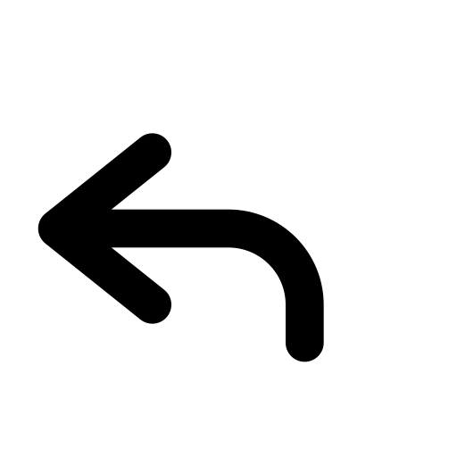

I det første Dans Dans Dans forløb havde jeg Jive-dansen, hvor jeg var ansvarlig for at tekst og indhold på de forskellige sider blev lagt op til tiden.

Vi kodede vær i sær en side til vores app, hvor vi kun skulle kode til mobil format.
Til at hjælpe med at skabe indholdet til siden, var vores gruppe ude på en danseskole og interviewe en jive underviser, sådan at vi ved hjælp af en professionel, kunne skabe en hjemmeside som gav mening for jive.

I det andet Dans Dans Dans forløb, overtog vi den danseskole som Bollywood holdet havde arbejdet på, og fik til opgave at vi skulle viderudvikle hjemmesiden, sådan at den blandt andet også fungerede på desktop.
I Bollywood forløbet var jeg designansvarlig, hvilket blandt andet betød at jeg var ude og test vores mood-boards, sådan at vi kunne finjustere dem.
Jeg var meget med i selve Xd processen, og var ind over det design som vi fik fundet frem til, et eksempel er det billede vist foroven.
Til at hjælpe med det æstetiske, testede vi vores mood-boards på nogle diverse folk, heriblandt nogle indere, for at vi kunne få det rigtige udtryk frem i vores hjemmeside.
